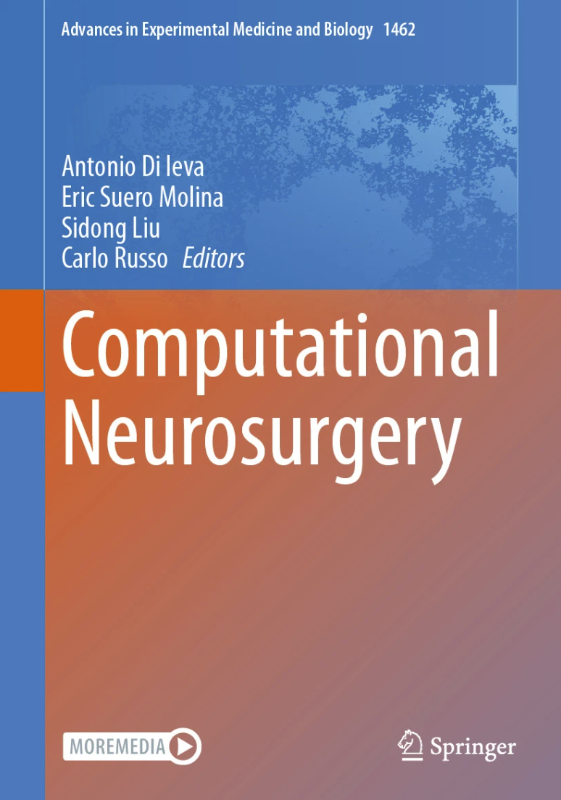
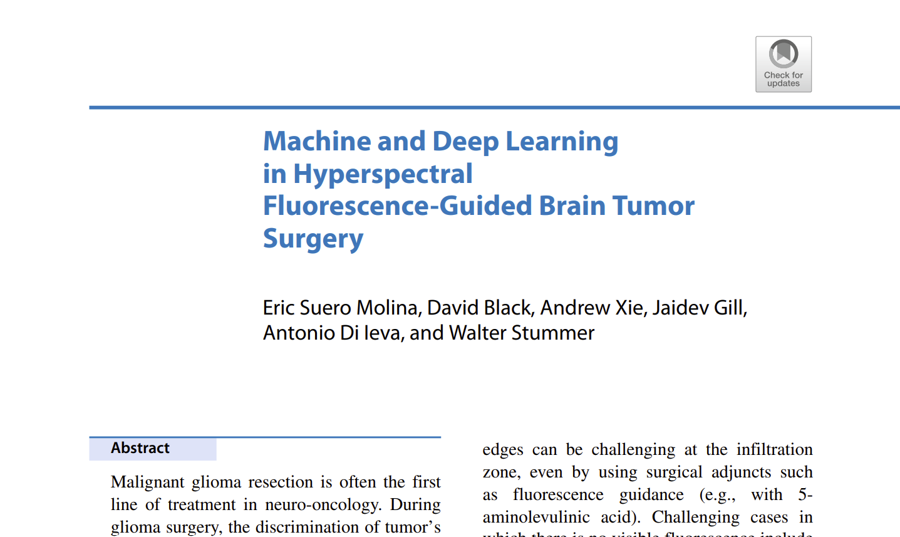

|
Jaidev Gill I am a second year PhD student in the department of Electrical Engineering and Computer Science at the University of Michigan, Ann Arbor working with Professor Lisa Li. Some of my research interests include network control theory, system identification, and nonlinear systems theory. I'm a recent graduate of the Engineering Physics program at the University of British Columbia. During my time at UBC I worked on understanding the learned representations of neural networks with Professor Christos Thrampoulidis. |
{kind=link}
Education
PhD in Electrical and Computer Engineering, University of Michigan, Ann Arbor, MI, 2024-Present |
Research |
|


|
Machine and Deep Learning in Hyperspectral Fluorescence-Guided Brain Tumor Surgery
Eric Suero Molina, David Black, Andrew Xie, Jaidev Gill, Antonio Di leva, Walter Stummer. Springer Nature Discussion of recent advances of hyperspectral fluorescence-guided neurosurgery through the use of machine learning techniques. |


|
Deep Learning Based Hyperspectral Image Correction and Unmixing for Brain Tumor Surgery
David Black*, Jaidev Gill*, Andrew Xie*, Benoit Liquet, Antonio Di leva, Walter Stummer, Eric Suero Molina, * Co-first authors. iScience / arXiv Design and implementation of a fully deep learning-based algorithm to correct and quantify PpIX in cancerous brain tissue. |


|
Engineering the Neural Collapse Geometry of Supervised-Contrastive Loss
Jaidev Gill, Vala Vakilian, Christos Thrampoulidis. ICASSP 2024 / AAAI SA 2024 / arXiv Prototypical representations of feature embeddings can force the representations of SCL to a desired geometry. |


|
Symmetric Neural-Collapse Representations with Supervised Contrastive Loss: The Impact of ReLU and Batching
Ganesh Ramachandra Kini, Vala Vakilian, Tina Behnia, Jaidev Gill, Christos Thrampoulidis. ICLR 2024 / ICML HiLD 2023 / DeepMath 2023 / arXiv In the presence of ReLU activations SCL learns representations robust to imbalances in the data distribution. |
Teaching
Teaching Assistant, PHYS 159 - Introductory Physics Laboratory for Engineers, UBC, Spring 2024
|
|
This website's source code is courtesy of John Barron. |